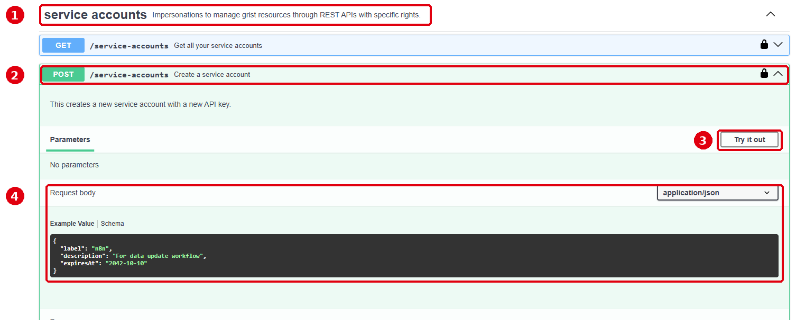

Magpie ne manipule aucune clé API
Cette page prépare votre demande et vous guide pas à pas. La création se fait dans la console API de Grist, qui utilise votre session Grist : vous n'avez pas besoin de votre clé API personnelle, et rien ne transite par un serveur tiers. Restez connecté à Grist dans ce navigateur.
Préparer le compte de service
Requête à coller dans la console :
Renseignez le nom et la date d'expiration.Créer le compte dans la console API
- Dans le champ Filter by tag en haut de la console, tapez
service. - Dépliez POST /service-accounts (Create a service account).
- Cliquez sur Try it out.
- Remplacez le contenu de Request body par la requête copiée à l'étape 1.
- Cliquez sur Execute.

Récupérer la clé et le login
La clé n'est affichée qu'une seule fois. Copiez-la immédiatement.
Dans la console, sous Server response, le Response body contient :
key: la clé API du compte de service. Rangez-la directement là où elle sera utilisée (identifiants n8n, gestionnaire de mots de passe…). Ne l'envoyez pas par mail ni par messagerie.login: une adresse en…@serviceaccounts.invalid, qui sert à partager un document avec ce compte.id: le numéro du compte, utile pour le modifier ou le supprimer plus tard.
Donner accès à un document
Cette étape se fait dans Grist, sans la console :
- Ouvrez le document concerné et cliquez sur Partager, puis Gérer les utilisateurs.
- Collez le
logindu compte de service et ajoutez-le. - Choisissez le rôle le plus faible possible : Lecteur si le compte ne fait que lire, Éditeur s'il écrit des données. Propriétaire uniquement si c'est indispensable.
- Pour aller plus loin, des règles d'accès peuvent limiter le compte à certaines tables ou lignes.
Toutes ces opérations se trouvent dans la section service accounts de la console.
Le paramètre saId correspond à l'id du compte.
| Je veux… | Opération dans la console | À renseigner |
|---|---|---|
| Lister mes comptes | GET /service-accounts | Rien |
| Prolonger ou renommer un compte | PATCH /service-accounts/{saId} | saId + requête ci-dessous |
| Remplacer une clé (perdue ou exposée) | POST /service-accounts/{saId}/apikey | saId |
| Révoquer la clé sans supprimer le compte | DELETE /service-accounts/{saId}/apikey | saId |
| Supprimer le compte | DELETE /service-accounts/{saId} | saId |
Prolonger un compte
Choisissez une date.- La section « service accounts » n'apparaît pas : l'instance n'a pas activé les
comptes de service (variable
GRIST_ENABLE_SERVICE_ACCOUNTS). Contactez son administrateur. - Réponse 401 ou 403 : vous n'êtes pas connecté à Grist dans ce navigateur. Connectez-vous, puis rechargez la console.
- Réponse 400 : la requête collée est incomplète ou mal formée. Recopiez-la depuis l'étape 1 en remplaçant tout le contenu de Request body.
- Clé perdue : elle ne peut pas être réaffichée. Générez-en une nouvelle
(
POST /service-accounts/{saId}/apikey) et mettez à jour les outils qui l'utilisent.